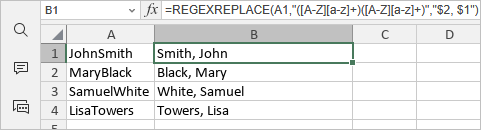

REGEXREPLACE Function
The REGEXREPLACE function is one of the text and data functions. It is used to replace text within a string that matches a regular expression pattern with specified replacement text.
Syntax
REGEXREPLACE(text, pattern, replacement, [occurrence], [case_sensitivity])
The REGEXREPLACE function has the following arguments:
| Argument | Description |
|---|---|
| text | The text string or reference to a cell containing the text in which you want to perform replacements. |
| pattern | The regular expression ("regex") that describes the pattern of text you want to replace. |
| replacement | The text you want to substitute for the matching pattern. You can use $1, $2, etc. to reference capturing groups from the pattern. |
| occurrence | Specifies which instance of the pattern you want to replace. It is an optional argument. If omitted, the default value is 0, which replaces all instances. A positive number replaces that specific occurrence. A negative number replaces occurrences counting from the end. |
| case_sensitivity | Determines whether the match is case-sensitive. It is an optional argument. If omitted, the match is case-sensitive (0). Enter 0 for case-sensitive matching or 1 for case-insensitive matching. |
Notes
When writing regex patterns, symbols called "tokens" can be used that match with a variety of characters. These are some simple tokens for reference:
- [0-9]: any numerical digit
- [a-z]: a character in the range of a to z
- [A-Z]: a character in the range of A to Z
- .: any single character
- *: zero or more of the preceding character
- +: one or more of the preceding character
- (): capturing group - captured text can be referenced in replacement as $1, $2, etc.
- {n}: exactly n occurrences of the preceding character
- \: escape character for special characters
Capturing groups are parts of a regex pattern surrounded by parentheses "(...)". In the replacement argument, you can reference captured groups using:
- $1 - first capturing group
- $2 - second capturing group
- $n - the nth capturing group
The function returns the modified text string. The original text in the source cell is not changed.
How to apply the REGEXREPLACE function.
Examples
The figure below displays the result returned by the REGEXREPLACE function.
